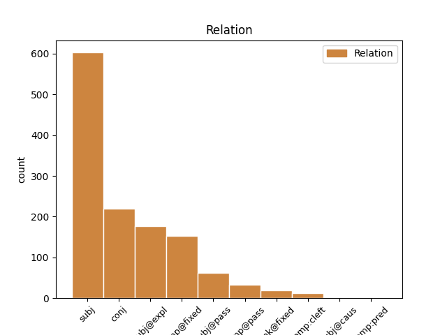
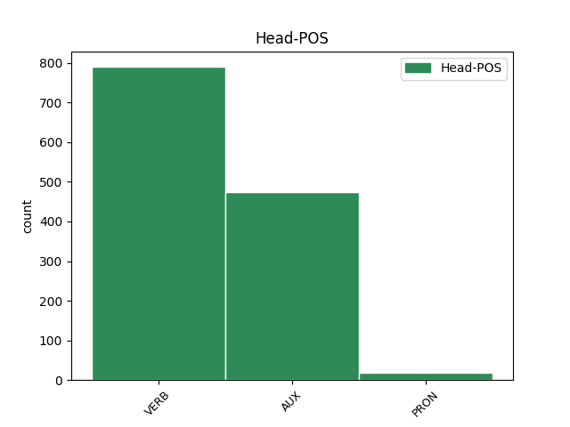
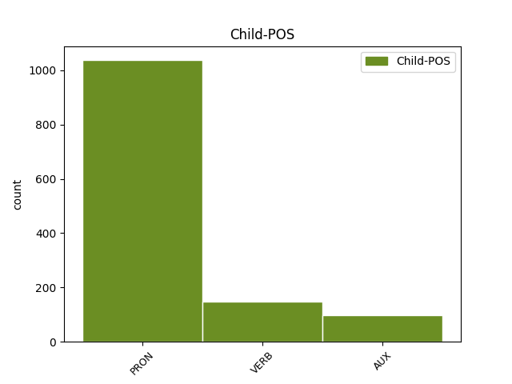

Distribution of features within this leaf



Agreement Rules sorted by frequency.
- When the dependent token is the subject(subj) of the head token,
1 Elles il PRON _ Gender=Fem|Number=Plur|Person=3 2 subj _ _
2 représentent représenter VERB _ Mood=Ind|Number=Plur|Person=3|Tense=Pres|VerbForm=Fin 0 _ _ _
3 , _ _ _ _ 0 _ _ _
4 en _ _ _ _ 0 _ _ _
5 date _ _ _ _ 0 _ _ _
6 respectivement _ _ _ _ 0 _ _ _
7 de _ _ _ _ 0 _ _ _
8 le _ _ _ _ 0 _ _ _
9 22 _ _ _ _ 0 _ _ _
10 juillet _ _ _ _ 0 _ _ _
11 et _ _ _ _ 0 _ _ _
12 de _ _ _ _ 0 _ _ _
13 le _ _ _ _ 0 _ _ _
14 5 _ _ _ _ 0 _ _ _
15 août _ _ _ _ 0 _ _ _
16 2006 _ _ _ _ 0 _ _ _
17 , _ _ _ _ 0 _ _ _
18 la _ _ _ _ 0 _ _ _
19 même _ _ _ _ 0 _ _ _
20 femme _ _ _ _ 0 _ _ _
21 ( _ _ _ _ 0 _ _ _
22 habillée _ _ _ _ 0 _ _ _
23 de _ _ _ _ 0 _ _ _
24 la _ _ _ _ 0 _ _ _
25 même _ _ _ _ 0 _ _ _
26 façon _ _ _ _ 0 _ _ _
27 et _ _ _ _ 0 _ _ _
28 reconnaissable _ _ _ _ 0 _ _ _
29 par _ _ _ _ 0 _ _ _
30 des _ _ _ _ 0 _ _ _
31 caractéristiques _ _ _ _ 0 _ _ _
32 physiques _ _ _ _ 0 _ _ _
33 sur _ _ _ _ 0 _ _ _
34 son _ _ _ _ 0 _ _ _
35 visage _ _ _ _ 0 _ _ _
36 ) _ _ _ _ 0 _ _ _
37 , _ _ _ _ 0 _ _ _
38 pleurant _ _ _ _ 0 _ _ _
39 la _ _ _ _ 0 _ _ _
40 destruction _ _ _ _ 0 _ _ _
41 de _ _ _ _ 0 _ _ _
42 sa _ _ _ _ 0 _ _ _
43 maison _ _ _ _ 0 _ _ _
44 [ _ _ _ _ 0 _ _ _
45 4 _ _ _ _ 0 _ _ _
46 . _ _ _ _ 0 _ _ _
1 En _ _ _ _ 0 _ _ _
2 juillet _ _ _ _ 0 _ _ _
3 de _ _ _ _ 0 _ _ _
4 l' _ _ _ _ 0 _ _ _
5 année _ _ _ _ 0 _ _ _
6 suivante _ _ _ _ 0 _ _ _
7 , _ _ _ _ 0 _ _ _
8 les _ _ _ _ 0 _ _ _
9 accords _ _ _ _ 0 _ _ _
10 de _ _ _ _ 0 _ _ _
11 Genève _ _ _ _ 0 _ _ _
12 étaient être AUX _ Mood=Ind|Number=Plur|Person=3|Tense=Imp|VerbForm=Fin 0 _ _ _
13 signés _ _ _ _ 0 _ _ _
14 et _ _ _ _ 0 _ _ _
15 l' _ _ _ _ 0 _ _ _
16 Indochine _ _ _ _ 0 _ _ _
17 française _ _ _ _ 0 _ _ _
18 avait avoir AUX _ Mood=Ind|Number=Sing|Person=3|Tense=Imp|VerbForm=Fin 12 conj _ _
19 vécu _ _ _ _ 0 _ _ _
20 . _ _ _ _ 0 _ _ _
1 En _ _ _ _ 0 _ _ _
2 fait _ _ _ _ 0 _ _ _
3 , _ _ _ _ 0 _ _ _
4 il il PRON _ Gender=Masc|Number=Sing|Person=3 5 subj@expl _ _
5 semble sembler VERB _ Mood=Ind|Number=Sing|Person=3|Tense=Pres|VerbForm=Fin 0 _ _ _
6 que _ _ _ _ 0 _ _ _
7 la _ _ _ _ 0 _ _ _
8 France _ _ _ _ 0 _ _ _
9 ait _ _ _ _ 0 _ _ _
10 cherché _ _ _ _ 0 _ _ _
11 à _ _ _ _ 0 _ _ _
12 sauver _ _ _ _ 0 _ _ _
13 à _ _ _ _ 0 _ _ _
14 le _ _ _ _ 0 _ _ _
15 moins _ _ _ _ 0 _ _ _
16 l' _ _ _ _ 0 _ _ _
17 Institut _ _ _ _ 0 _ _ _
18 d' _ _ _ _ 0 _ _ _
19 émission _ _ _ _ 0 _ _ _
20 , _ _ _ _ 0 _ _ _
21 pièce _ _ _ _ 0 _ _ _
22 maîtresse _ _ _ _ 0 _ _ _
23 de _ _ _ _ 0 _ _ _
24 sa _ _ _ _ 0 _ _ _
25 diplomatie _ _ _ _ 0 _ _ _
26 financière _ _ _ _ 0 _ _ _
27 en _ _ _ _ 0 _ _ _
28 Indochine _ _ _ _ 0 _ _ _
29 . _ _ _ _ 0 _ _ _
1 L' _ _ _ _ 0 _ _ _
2 affaire _ _ _ _ 0 _ _ _
3 fut _ _ _ _ 0 _ _ _
4 mise _ _ _ _ 0 _ _ _
5 à _ _ _ _ 0 _ _ _
6 jour _ _ _ _ 0 _ _ _
7 en _ _ _ _ 0 _ _ _
8 1950 _ _ _ _ 0 _ _ _
9 , _ _ _ _ 0 _ _ _
10 mais _ _ _ _ 0 _ _ _
11 ne _ _ _ _ 0 _ _ _
12 suscita _ _ _ _ 0 _ _ _
13 qu' _ _ _ _ 0 _ _ _
14 un _ _ _ _ 0 _ _ _
15 intérêt _ _ _ _ 0 _ _ _
16 limité _ _ _ _ 0 _ _ _
17 chez _ _ _ _ 0 _ _ _
18 les _ _ _ _ 0 _ _ _
19 parlementaires _ _ _ _ 0 _ _ _
20 , _ _ _ _ 0 _ _ _
21 jusqu' _ _ _ _ 0 _ _ _
22 en _ _ _ _ 0 _ _ _
23 1952-1953 _ _ _ _ 0 _ _ _
24 où _ _ _ _ 0 _ _ _
25 l' _ _ _ _ 0 _ _ _
26 on _ _ _ _ 0 _ _ _
27 se se PRON _ Person=3|Reflex=Yes 28 comp@fixed _ _
28 rendit rendre VERB _ Mood=Ind|Number=Sing|Person=3|Tense=Past|VerbForm=Fin 0 _ _ _
29 compte _ _ _ _ 0 _ _ _
30 que _ _ _ _ 0 _ _ _
31 le _ _ _ _ 0 _ _ _
32 Viet _ _ _ _ 0 _ _ _
33 Minh _ _ _ _ 0 _ _ _
34 en _ _ _ _ 0 _ _ _
35 profitait _ _ _ _ 0 _ _ _
36 également _ _ _ _ 0 _ _ _
37 , _ _ _ _ 0 _ _ _
38 et _ _ _ _ 0 _ _ _
39 qu' _ _ _ _ 0 _ _ _
40 une _ _ _ _ 0 _ _ _
41 partie _ _ _ _ 0 _ _ _
42 de _ _ _ _ 0 _ _ _
43 les _ _ _ _ 0 _ _ _
44 armes _ _ _ _ 0 _ _ _
45 tournées _ _ _ _ 0 _ _ _
46 contre _ _ _ _ 0 _ _ _
47 les _ _ _ _ 0 _ _ _
48 soldats _ _ _ _ 0 _ _ _
49 français _ _ _ _ 0 _ _ _
50 ( _ _ _ _ 0 _ _ _
51 y _ _ _ _ 0 _ _ _
52 compris _ _ _ _ 0 _ _ _
53 tiralleurs _ _ _ _ 0 _ _ _
54 sénégalais _ _ _ _ 0 _ _ _
55 et _ _ _ _ 0 _ _ _
56 marocains _ _ _ _ 0 _ _ _
57 ) _ _ _ _ 0 _ _ _
58 avaient _ _ _ _ 0 _ _ _
59 donc _ _ _ _ 0 _ _ _
60 été _ _ _ _ 0 _ _ _
61 acquises _ _ _ _ 0 _ _ _
62 grâce _ _ _ _ 0 _ _ _
63 à _ _ _ _ 0 _ _ _
64 ce _ _ _ _ 0 _ _ _
65 trafic _ _ _ _ 0 _ _ _
66 entretenu _ _ _ _ 0 _ _ _
67 par _ _ _ _ 0 _ _ _
68 l' _ _ _ _ 0 _ _ _
69 avidité _ _ _ _ 0 _ _ _
70 de _ _ _ _ 0 _ _ _
71 certains _ _ _ _ 0 _ _ _
72 . _ _ _ _ 0 _ _ _
1 Puis _ _ _ _ 0 _ _ _
2 , _ _ _ _ 0 _ _ _
3 les _ _ _ _ 0 _ _ _
4 sommes _ _ _ _ 0 _ _ _
5 étaient _ _ _ _ 0 _ _ _
6 retirées _ _ _ _ 0 _ _ _
7 par _ _ _ _ 0 _ _ _
8 des _ _ _ _ 0 _ _ _
9 proches _ _ _ _ 0 _ _ _
10 de _ _ _ _ 0 _ _ _
11 Safa _ _ _ _ 0 _ _ _
12 et _ _ _ _ 0 _ _ _
13 apportées _ _ _ _ 0 _ _ _
14 à _ _ _ _ 0 _ _ _
15 l' _ _ _ _ 0 _ _ _
16 association _ _ _ _ 0 _ _ _
17 France _ _ _ _ 0 _ _ _
18 Orient _ _ _ _ 0 _ _ _
19 , _ _ _ _ 0 _ _ _
20 où _ _ _ _ 0 _ _ _
21 elles il PRON _ Gender=Fem|Number=Plur|Person=3 22 subj@pass _ _
22 étaient être AUX _ Mood=Ind|Number=Plur|Person=3|Tense=Imp|VerbForm=Fin 0 _ _ _
23 réceptionnées _ _ _ _ 0 _ _ _
24 par _ _ _ _ 0 _ _ _
25 J.-C. _ _ _ _ 0 _ _ _
26 Marchianni _ _ _ _ 0 _ _ _
27 ou _ _ _ _ 0 _ _ _
28 sa _ _ _ _ 0 _ _ _
29 secrétaire _ _ _ _ 0 _ _ _
30 . _ _ _ _ 0 _ _ _
1 La _ _ _ _ 0 _ _ _
2 situation _ _ _ _ 0 _ _ _
3 troublée _ _ _ _ 0 _ _ _
4 de _ _ _ _ 0 _ _ _
5 l' _ _ _ _ 0 _ _ _
6 époque _ _ _ _ 0 _ _ _
7 ne _ _ _ _ 0 _ _ _
8 facilitant _ _ _ _ 0 _ _ _
9 pas _ _ _ _ 0 _ _ _
10 les _ _ _ _ 0 _ _ _
11 contrôles _ _ _ _ 0 _ _ _
12 de _ _ _ _ 0 _ _ _
13 l' _ _ _ _ 0 _ _ _
14 OIC _ _ _ _ 0 _ _ _
15 et _ _ _ _ 0 _ _ _
16 encore _ _ _ _ 0 _ _ _
17 moins _ _ _ _ 0 _ _ _
18 les _ _ _ _ 0 _ _ _
19 inculpations _ _ _ _ 0 _ _ _
20 , _ _ _ _ 0 _ _ _
21 un _ _ _ _ 0 _ _ _
22 trafic _ _ _ _ 0 _ _ _
23 florissant _ _ _ _ 0 _ _ _
24 par _ _ _ _ 0 _ _ _
25 le _ _ _ _ 0 _ _ _
26 biais _ _ _ _ 0 _ _ _
27 de _ _ _ _ 0 _ _ _
28 fausses _ _ _ _ 0 _ _ _
29 exportations _ _ _ _ 0 _ _ _
30 , _ _ _ _ 0 _ _ _
31 fausses _ _ _ _ 0 _ _ _
32 factures _ _ _ _ 0 _ _ _
33 ou _ _ _ _ 0 _ _ _
34 surfacturations _ _ _ _ 0 _ _ _
35 , _ _ _ _ 0 _ _ _
36 impliquant _ _ _ _ 0 _ _ _
37 Français _ _ _ _ 0 _ _ _
38 et _ _ _ _ 0 _ _ _
39 Vietnamiens _ _ _ _ 0 _ _ _
40 , _ _ _ _ 0 _ _ _
41 se se PRON _ Person=3|Reflex=Yes 42 comp@pass _ _
42 mit mettre VERB _ Mood=Ind|Number=Sing|Person=3|Tense=Past|VerbForm=Fin 0 _ _ _
43 en _ _ _ _ 0 _ _ _
44 place _ _ _ _ 0 _ _ _
45 à _ _ _ _ 0 _ _ _
46 partir _ _ _ _ 0 _ _ _
47 de _ _ _ _ 0 _ _ _
48 1948 _ _ _ _ 0 _ _ _
49 . _ _ _ _ 0 _ _ _
1 Merci _ _ _ _ 0 _ _ _
2 aussi _ _ _ _ 0 _ _ _
3 d' _ _ _ _ 0 _ _ _
4 avoir _ _ _ _ 0 _ _ _
5 évoqué _ _ _ _ 0 _ _ _
6 la _ _ _ _ 0 _ _ _
7 visite _ _ _ _ 0 _ _ _
8 que _ _ _ _ 0 _ _ _
9 j' _ _ _ _ 0 _ _ _
10 ai _ _ _ _ 0 _ _ _
11 effectuée _ _ _ _ 0 _ _ _
12 il _ _ _ _ 0 _ _ _
13 y y PRON _ Person=3 0 _ _ _
14 a avoir VERB _ Mood=Ind|Number=Sing|Person=3|Tense=Pres|VerbForm=Fin 13 unk@fixed _ _
15 quelques _ _ _ _ 0 _ _ _
16 semaines _ _ _ _ 0 _ _ _
17 à _ _ _ _ 0 _ _ _
18 Lubljana _ _ _ _ 0 _ _ _
19 . _ _ _ _ 0 _ _ _
1 Cette _ _ _ _ 0 _ _ _
2 défense _ _ _ _ 0 _ _ _
3 est _ _ _ _ 0 _ _ _
4 assez _ _ _ _ 0 _ _ _
5 intelligente _ _ _ _ 0 _ _ _
6 , _ _ _ _ 0 _ _ _
7 car _ _ _ _ 0 _ _ _
8 c' _ _ _ _ 0 _ _ _
9 est être AUX _ Mood=Ind|Number=Sing|Person=3|Tense=Pres|VerbForm=Fin 0 _ _ _
10 l' _ _ _ _ 0 _ _ _
11 État _ _ _ _ 0 _ _ _
12 français _ _ _ _ 0 _ _ _
13 lui-même _ _ _ _ 0 _ _ _
14 qui _ _ _ _ 0 _ _ _
15 lui _ _ _ _ 0 _ _ _
16 fournit fournir VERB _ Mood=Ind|Number=Sing|Person=3|Tense=Past|VerbForm=Fin 9 comp:cleft _ _
17 son _ _ _ _ 0 _ _ _
18 alibi _ _ _ _ 0 _ _ _
19 , _ _ _ _ 0 _ _ _
20 en _ _ _ _ 0 _ _ _
21 assurant _ _ _ _ 0 _ _ _
22 qu' _ _ _ _ 0 _ _ _
23 il _ _ _ _ 0 _ _ _
24 n' _ _ _ _ 0 _ _ _
25 y _ _ _ _ 0 _ _ _
26 a _ _ _ _ 0 _ _ _
27 eu _ _ _ _ 0 _ _ _
28 à _ _ _ _ 0 _ _ _
29 aucun _ _ _ _ 0 _ _ _
30 moment _ _ _ _ 0 _ _ _
31 paiement _ _ _ _ 0 _ _ _
32 d' _ _ _ _ 0 _ _ _
33 une _ _ _ _ 0 _ _ _
34 rançon _ _ _ _ 0 _ _ _
35 . _ _ _ _ 0 _ _ _
1 Ils il PRON _ Gender=Masc|Number=Plur|Person=3 3 subj@caus _ _
2 lui _ _ _ _ 0 _ _ _
3 ont avoir AUX _ Mood=Ind|Number=Plur|Person=3|Tense=Pres|VerbForm=Fin 0 _ _ _
4 fait _ _ _ _ 0 _ _ _
5 subir _ _ _ _ 0 _ _ _
6 des _ _ _ _ 0 _ _ _
7 chocs _ _ _ _ 0 _ _ _
8 électriques _ _ _ _ 0 _ _ _
9 sur _ _ _ _ 0 _ _ _
10 les _ _ _ _ 0 _ _ _
11 parties _ _ _ _ 0 _ _ _
12 sensibles _ _ _ _ 0 _ _ _
13 de _ _ _ _ 0 _ _ _
14 son _ _ _ _ 0 _ _ _
15 corps _ _ _ _ 0 _ _ _
16 . _ _ _ _ 0 _ _ _
1 C' _ _ _ _ 0 _ _ _
2 est être AUX _ Mood=Ind|Number=Sing|Person=3|Tense=Pres|VerbForm=Fin 0 _ _ _
3 lui lui PRON _ Gender=Masc|Number=Sing|Person=3|PronType=Prs 2 comp:pred _ _
4 qui _ _ _ _ 0 _ _ _
5 aide _ _ _ _ 0 _ _ _
6 Francis _ _ _ _ 0 _ _ _
7 Poullain _ _ _ _ 0 _ _ _
8 , _ _ _ _ 0 _ _ _
9 grâce _ _ _ _ 0 _ _ _
10 à _ _ _ _ 0 _ _ _
11 le _ _ _ _ 0 _ _ _
12 produit _ _ _ _ 0 _ _ _
13 de _ _ _ _ 0 _ _ _
14 les _ _ _ _ 0 _ _ _
15 fausses _ _ _ _ 0 _ _ _
16 factures _ _ _ _ 0 _ _ _
17 , _ _ _ _ 0 _ _ _
18 à _ _ _ _ 0 _ _ _
19 obtenir _ _ _ _ 0 _ _ _
20 des _ _ _ _ 0 _ _ _
21 marchés _ _ _ _ 0 _ _ _
22 publics _ _ _ _ 0 _ _ _
23 tantôt _ _ _ _ 0 _ _ _
24 à _ _ _ _ 0 _ _ _
25 l' _ _ _ _ 0 _ _ _
26 office _ _ _ _ 0 _ _ _
27 HLM _ _ _ _ 0 _ _ _
28 de _ _ _ _ 0 _ _ _
29 Paris _ _ _ _ 0 _ _ _
30 , _ _ _ _ 0 _ _ _
31 tantôt _ _ _ _ 0 _ _ _
32 à _ _ _ _ 0 _ _ _
33 l' _ _ _ _ 0 _ _ _
34 office _ _ _ _ 0 _ _ _
35 HLM _ _ _ _ 0 _ _ _
36 de _ _ _ _ 0 _ _ _
37 les _ _ _ _ 0 _ _ _
38 Hauts-de-Seine _ _ _ _ 0 _ _ _
39 . _ _ _ _ 0 _ _ _
Disagree Examples:
1 Avec _ _ _ _ 0 _ _ _
2 les _ _ _ _ 0 _ _ _
3 dangers _ _ _ _ 0 _ _ _
4 qu' _ _ _ _ 0 _ _ _
5 elle _ _ _ _ 0 _ _ _
6 peut pouvoir VERB _ Mood=Ind|Number=Sing|Person=3|Tense=Pres|VerbForm=Fin 0 _ _ _
7 receler _ _ _ _ 0 _ _ _
8 , _ _ _ _ 0 _ _ _
9 et _ _ _ _ 0 _ _ _
10 dont _ _ _ _ 0 _ _ _
11 nous _ _ _ _ 0 _ _ _
12 n' _ _ _ _ 0 _ _ _
13 avons avoir VERB _ Mood=Ind|Number=Plur|Person=1|Tense=Pres|VerbForm=Fin 6 conj _ _
14 pas _ _ _ _ 0 _ _ _
15 conscience _ _ _ _ 0 _ _ _
16 . _ _ _ _ 0 _ _ _
1 J' _ _ _ _ 0 _ _ _
2 étais être AUX _ Mood=Ind|Number=Sing|Person=1|Tense=Imp|VerbForm=Fin 0 _ _ _
3 prêt _ _ _ _ 0 _ _ _
4 à _ _ _ _ 0 _ _ _
5 partir _ _ _ _ 0 _ _ _
6 , _ _ _ _ 0 _ _ _
7 malgré _ _ _ _ 0 _ _ _
8 mon _ _ _ _ 0 _ _ _
9 attachement _ _ _ _ 0 _ _ _
10 à _ _ _ _ 0 _ _ _
11 l' _ _ _ _ 0 _ _ _
12 ASNL _ _ _ _ 0 _ _ _
13 et _ _ _ _ 0 _ _ _
14 à _ _ _ _ 0 _ _ _
15 la _ _ _ _ 0 _ _ _
16 ville _ _ _ _ 0 _ _ _
17 , _ _ _ _ 0 _ _ _
18 car _ _ _ _ 0 _ _ _
19 à _ _ _ _ 0 _ _ _
20 32 _ _ _ _ 0 _ _ _
21 ans _ _ _ _ 0 _ _ _
22 , _ _ _ _ 0 _ _ _
23 il _ _ _ _ 0 _ _ _
24 s' _ _ _ _ 0 _ _ _
25 agissait agir VERB _ Mood=Ind|Number=Sing|Person=3|Tense=Imp|VerbForm=Fin 2 conj _ _
26 sans _ _ _ _ 0 _ _ _
27 doute _ _ _ _ 0 _ _ _
28 de _ _ _ _ 0 _ _ _
29 ma _ _ _ _ 0 _ _ _
30 dernière _ _ _ _ 0 _ _ _
31 chance _ _ _ _ 0 _ _ _
32 de _ _ _ _ 0 _ _ _
33 signer _ _ _ _ 0 _ _ _
34 un _ _ _ _ 0 _ _ _
35 nouveau _ _ _ _ 0 _ _ _
36 contrat _ _ _ _ 0 _ _ _
37 " _ _ _ _ 0 _ _ _
38 . _ _ _ _ 0 _ _ _
1 M. _ _ _ _ 0 _ _ _
2 Turmes _ _ _ _ 0 _ _ _
3 a avoir AUX _ Mood=Ind|Number=Sing|Person=3|Tense=Pres|VerbForm=Fin 0 _ _ _
4 abordé _ _ _ _ 0 _ _ _
5 ce _ _ _ _ 0 _ _ _
6 point _ _ _ _ 0 _ _ _
7 et _ _ _ _ 0 _ _ _
8 je _ _ _ _ 0 _ _ _
9 me _ _ _ _ 0 _ _ _
10 rappelle rappeler VERB _ Mood=Ind|Number=Sing|Person=1|Tense=Pres|VerbForm=Fin 3 conj _ _
11 que _ _ _ _ 0 _ _ _
12 les _ _ _ _ 0 _ _ _
13 milieux _ _ _ _ 0 _ _ _
14 industriels _ _ _ _ 0 _ _ _
15 savent _ _ _ _ 0 _ _ _
16 , _ _ _ _ 0 _ _ _
17 en _ _ _ _ 0 _ _ _
18 tout _ _ _ _ 0 _ _ _
19 cas _ _ _ _ 0 _ _ _
20 depuis _ _ _ _ 0 _ _ _
21 1992 _ _ _ _ 0 _ _ _
22 , _ _ _ _ 0 _ _ _
23 que _ _ _ _ 0 _ _ _
24 les _ _ _ _ 0 _ _ _
25 ballasts _ _ _ _ 0 _ _ _
26 magnétiques _ _ _ _ 0 _ _ _
27 seront _ _ _ _ 0 _ _ _
28 plus _ _ _ _ 0 _ _ _
29 ou _ _ _ _ 0 _ _ _
30 moins _ _ _ _ 0 _ _ _
31 interdits _ _ _ _ 0 _ _ _
32 vers _ _ _ _ 0 _ _ _
33 2009 _ _ _ _ 0 _ _ _
34 . _ _ _ _ 0 _ _ _
1 Il _ _ _ _ 0 _ _ _
2 s' _ _ _ _ 0 _ _ _
3 agit agir VERB _ Mood=Ind|Number=Sing|Person=3|Tense=Past|VerbForm=Fin 0 _ _ _
4 , _ _ _ _ 0 _ _ _
5 en _ _ _ _ 0 _ _ _
6 somme _ _ _ _ 0 _ _ _
7 , _ _ _ _ 0 _ _ _
8 d' _ _ _ _ 0 _ _ _
9 une _ _ _ _ 0 _ _ _
10 excellente _ _ _ _ 0 _ _ _
11 proposition _ _ _ _ 0 _ _ _
12 et _ _ _ _ 0 _ _ _
13 je _ _ _ _ 0 _ _ _
14 recommande recommander VERB _ Mood=Ind|Number=Sing|Person=1|Tense=Pres|VerbForm=Fin 3 conj _ _
15 - _ _ _ _ 0 _ _ _
16 comme _ _ _ _ 0 _ _ _
17 l' _ _ _ _ 0 _ _ _
18 ont _ _ _ _ 0 _ _ _
19 convenu _ _ _ _ 0 _ _ _
20 les _ _ _ _ 0 _ _ _
21 groupes _ _ _ _ 0 _ _ _
22 - _ _ _ _ 0 _ _ _
23 son _ _ _ _ 0 _ _ _
24 soutien _ _ _ _ 0 _ _ _
25 et _ _ _ _ 0 _ _ _
26 son _ _ _ _ 0 _ _ _
27 adoption _ _ _ _ 0 _ _ _
28 par _ _ _ _ 0 _ _ _
29 tous _ _ _ _ 0 _ _ _
30 . _ _ _ _ 0 _ _ _
1 Même _ _ _ _ 0 _ _ _
2 si _ _ _ _ 0 _ _ _
3 de _ _ _ _ 0 _ _ _
4 nombreuses _ _ _ _ 0 _ _ _
5 évolutions _ _ _ _ 0 _ _ _
6 nous _ _ _ _ 0 _ _ _
7 avaient _ _ _ _ 0 _ _ _
8 permis _ _ _ _ 0 _ _ _
9 d' _ _ _ _ 0 _ _ _
10 en _ _ _ _ 0 _ _ _
11 douter _ _ _ _ 0 _ _ _
12 , _ _ _ _ 0 _ _ _
13 nous _ _ _ _ 0 _ _ _
14 avions avoir AUX _ Mood=Ind|Number=Plur|Person=1|Tense=Imp|VerbForm=Fin 0 _ _ _
15 considéré _ _ _ _ 0 _ _ _
16 malgré _ _ _ _ 0 _ _ _
17 tout _ _ _ _ 0 _ _ _
18 que _ _ _ _ 0 _ _ _
19 tel _ _ _ _ 0 _ _ _
20 était _ _ _ _ 0 _ _ _
21 le _ _ _ _ 0 _ _ _
22 cas _ _ _ _ 0 _ _ _
23 et _ _ _ _ 0 _ _ _
24 , _ _ _ _ 0 _ _ _
25 récemment _ _ _ _ 0 _ _ _
26 encore _ _ _ _ 0 _ _ _
27 , _ _ _ _ 0 _ _ _
28 on _ _ _ _ 0 _ _ _
29 faisait faire VERB _ Mood=Ind|Number=Sing|Person=3|Tense=Imp|VerbForm=Fin 14 conj _ _
30 allusion _ _ _ _ 0 _ _ _
31 , _ _ _ _ 0 _ _ _
32 de _ _ _ _ 0 _ _ _
33 le _ _ _ _ 0 _ _ _
34 bout _ _ _ _ 0 _ _ _
35 de _ _ _ _ 0 _ _ _
36 les _ _ _ _ 0 _ _ _
37 lèvres _ _ _ _ 0 _ _ _
38 , _ _ _ _ 0 _ _ _
39 il _ _ _ _ 0 _ _ _
40 est _ _ _ _ 0 _ _ _
41 vrai _ _ _ _ 0 _ _ _
42 , _ _ _ _ 0 _ _ _
43 à _ _ _ _ 0 _ _ _
44 le _ _ _ _ 0 _ _ _
45 principe _ _ _ _ 0 _ _ _
46 de _ _ _ _ 0 _ _ _
47 subsidiarité _ _ _ _ 0 _ _ _
48 . _ _ _ _ 0 _ _ _